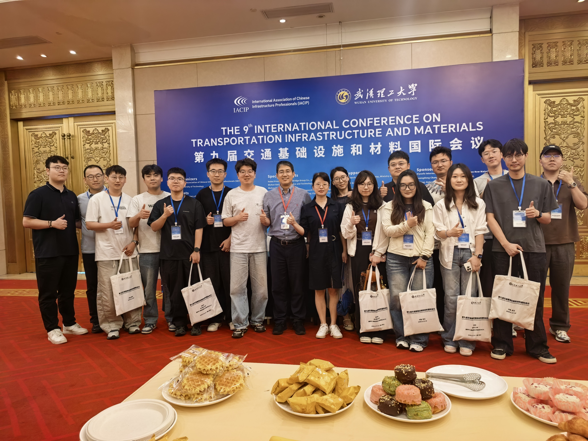
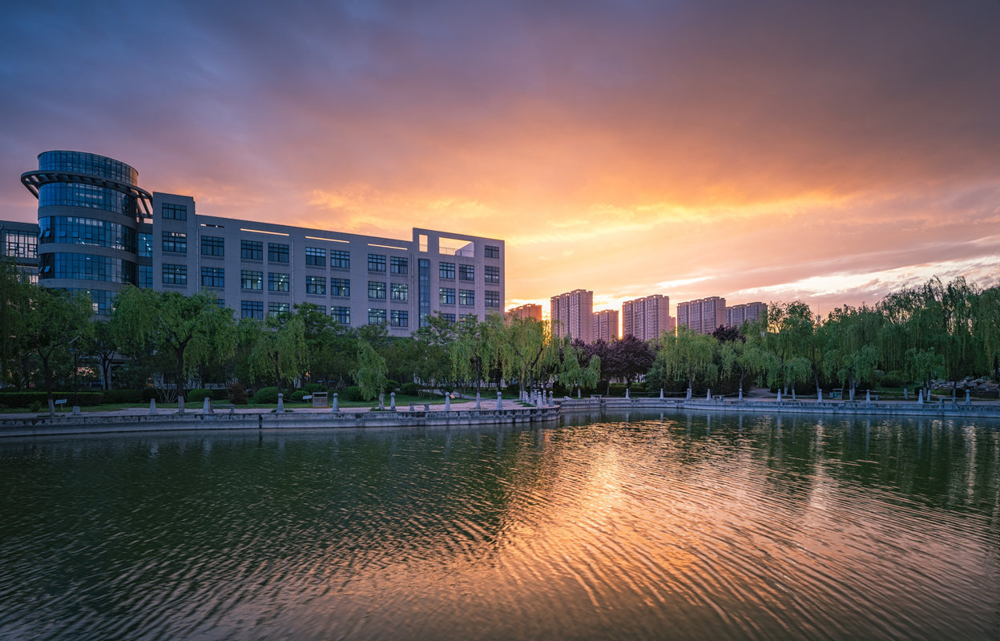
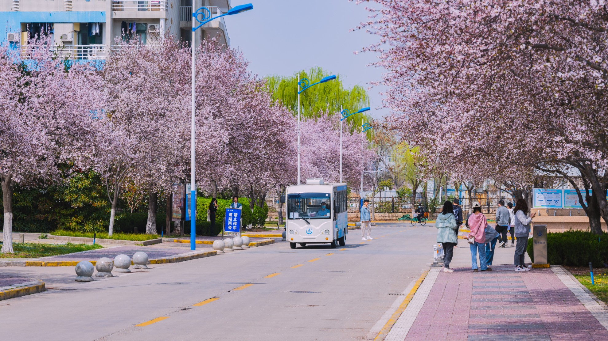

高性能道路材料
研究改性沥青、复合材料及长寿命路面材料的组成设计、性能调控与耐久提升。
面向交通基础设施高性能、长寿命、绿色低碳与能源协同发展需求，围绕道路材料设计、微观机制解析、服役性能评价及工程应用开展多尺度研究。
依托长安大学公路学科基础，综合材料设计、性能试验、微观表征与数值模拟方法，研究道路材料组成、结构、性能与服役行为之间的内在联系。

Mark课题组隶属于长安大学公路学院，围绕道路材料高性能化与长寿命服役、功能型路面、再生利用与低碳评价、微观机制解析及交通能源融合等方向，开展材料设计、试验评价、数值模拟与工程应用研究。
研究强调工程问题、科学方法与证据链之间的一致性：从服役需求识别和科学问题凝练出发，通过可重复的试验、微观表征与多尺度模拟揭示材料行为，并结合性能评价和工程场景检验研究结论。同时，通过研究全过程训练培养成员的独立思考、数据分析与学术表达能力。
了解课题组贯通材料设计、机制解析、性能评价与工程服役，并延伸至资源循环和交通能源协同。
研究改性沥青、复合材料及长寿命路面材料的组成设计、性能调控与耐久提升。
研究老化沥青活化、再生材料高值利用及道路材料全寿命周期环境影响评价。
面向降噪、抑烟、抗冰与自修复等服役需求，开展功能材料设计、性能评价与作用机制研究。
结合微观表征、界面测试与分子模拟，解析材料结构、界面行为与宏观性能之间的联系。
研究道路光伏、路域能量采集及交通基础设施与能源系统之间的协同关系。
研究道路材料性能演化、路面状态感知、服役性能预测与养护决策方法。
材料设计 · 实验评价 · 微观表征 · 数值模拟 · 工程验证
开放的校园、深厚的公路学科积淀，以及一群愿意钻研的人。


欢迎道路工程、材料、化学、能源、计算模拟等相关背景的同学联系咨询。